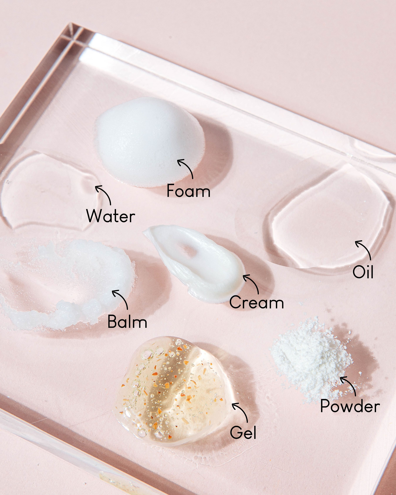

cleanser
Our skin collects sweat, oil, bacteria, and dirt throughout the day. Cleaning that off every day is good for our skin - as long as it's done gently! Cleansing can also help treat acne and it prepares the skin for any actives or treatments that you may be using. It's a good idea to use a cleanser at night, to wash off all the gunk that builds up during the day. In the morning, depending on your skin's needs, you can use a cleanser or simply rinse with water. A good cleanser leaves your skin feeling soft - not dry, tight, or squeaky clean.
How To Use
Typically to use a cleanser, wet your face and gently massage a pea size amount of cleanser on your skin, then rinse thoroughly. How frequently you cleanse depends on your skin - many people prefer to cleanse once a day, others prefer to cleanse both AM and PM. Using a cleanser too frequently can cause dryness and irritation, even for the gentlest of cleansers. If you experience dry skin, irritation, or redness, you may want to cut down on how often you cleanse.
If you wear makeup or sunscreen that doesn't budge easily you may want to use an additional cleansing product prior to your cleanser in the PM. Oil cleansing and micellar water are some good options. See Double Cleansing for more information!
Types of Cleansers
There are many different cleansing options available, each with different benefits. It’s easy to feel overwhelmed so knowing the difference between each type allows you to filter your options and makes finding that perfect cleanser for you a lot easier. Remember, there are no hard rules so use the following information as a rough guideline and feel free to try any type of cleanser as long as your skin tolerates it.
Foam Cleansers
Foam cleansers are lightweight cleansers that start out as cream or gel and turn into a foamy lather to remove excess oil. They can be a little harsh on the skin because they’re made to slightly dry out the skin, so it’s ideal for people with oily or combination skin. Again, this isn't a hard rule - there are plenty of very gentle foaming cleansers!
Some popular foam cleansers are: CeraVe Foaming Facial Cleanser, Kind to Skin Foaming Facial Cleanser, and La Roche-Posay Toleriane Purifying Foaming Facial Wash.
Gel Cleansers
Gel cleansers are typically clear and generally designed for deep cleansing, effective at removing excess oil, and exfoliating the skin. They are ideal cleansers for people with oily skin.
Some popular gel cleansers are: COSRX Low pH Good Morning Gel Cleanser, Fresh Soy Face Cleanser, and Eucerin Redness Relief Cleansing Gel.
Cream Cleansers
Cream cleansers (also known as milk or lotion cleansers) are thick, creamy, and moisturizing thanks to ingredients like botanical oils. They are made of lightweight emollients, which can gently cleanse without stripping your skin of its natural oils. They are ideal cleansers for people with dry and sensitive skin.
Some popular gel cleansers are: CeraVe Hydrating Face Wash, Cetaphil Gentle Skin Cleanser, and Neutrogena Ultra Gentle Hydrating Daily Facial Cleanser.
Powder Cleansers
Powder cleansers start out as a fine powder and transforms into a creamy lather or light foam with water. Powder cleansers pack powerful exfoliating properties so it is not recommended for dry skin.
To use the powder simply mix the powder with a bit of water in your hand, then use it as you would a regular cleanser. You may have to experiment with the powder to water ratio to find the right consistency for you.
Some popular cleansing powders are: Josie Maran Argan Exfoliating Cleansing Powder and DHC Face Wash Powder.
Oil Cleansers
Washing your skin with oil may sound like a recipe for breakouts, especially if you have oily skin. An oil cleanser is a gentle way of removing pore-clogging debris, such as waterproof makeup, without drying your skin. Oil cleansers are usually compatable with most skin types.
Some popular cleansing oils are: DHC Deep Cleansing Oil and Simple Kind to Skin Cleansing Oil.
It's important to note that cleansing oils may leave a residue even after rinsing so it is recommended that a second cleanser is used after an oil cleanse. See Double Cleansing for more information!
Cleansing Balms
Cleansing balms use oil to latch onto and remove makeup without stripping the skin. They are similar to cleansing oils but have a thicker, almost solid, consistency. They typically contain ingredients that are gentle on the skin and are ideal for dry and sensitive skin.
Some popular cleansing balms are: Banila Co Clean It Zero Cleansing Balm and Farmacy Green Clean Balm.
Similar to oils, balms may leave a residue even after rinsing so it is recommended that another cleanser is used afterwards. See Double Cleansing for more information!
Micellar Water
Micellar Water is made with two essential ingredients: water and surfactants. Surfactants are molecules that are attracted to oil and grease and don’t mind being suspended in water. These surfactants are what helps the micellar water cling onto the makeup and dirt on your skin and draw out impurities, leaving behind a glowy and hydrated finish. Micellar water is ideal for all skin types, especially for dry and sensitive skin.
Unlike the cleansers mentioned above, micellar water is used with a cotton pad. To use it, soak a cotton pad with the micellar water and gently swipe across the skin to remove makeup and impurities.
Some popular micellar water products are: Bioderma Hydrabio H2O Hydrating Micellar Cleansing Water and Garnier Micellar Cleansing Water.
Double Cleansing
Double cleansing involves using a cleansing oil, balm or micellar water first, then following it with a deeper water-based cleanse. The idea behind oil cleansing is "like disolves like." The oil will break down anything oil based, such as make-up, SPF and sebum on the surface of your skin while the second cleanser will cleanse anything remaining on the skin. This cleansing method allows you achieve a deep clean without overly stripping your skin.
Too double cleanse, pick a cleansing oil, balm or micellar water as your first cleanser and use it as you normally would. If you are using an oil or balm cleanser massage the product into your skin for 30 seconds to a minute. You can choose to either rinse off the product with water or wipe it off with a wash cloth (gently!). If you opt for a micellar water use a cloth or cotton pad to gently wipe your skin clean. Then, you want to go in with a water based cleanser. Since the oil from the first will not be completely removed with water, a foaming cleanser is recommended to help remove the excess oil left on your face. Once you wash off your second cleanser you've finished double cleansing!
This process may sound overly stripping however, oil is very gentle on the skin and will dissolve all the makeup and spf with ease. That said, everyone's skin is different, so if you find that this method doesn't work for you you can try different product combinations or simply not double cleanse.
Now that you know how to properly cleanse your skin, hop over to moisturizers to learn how to rehydrate your skin!